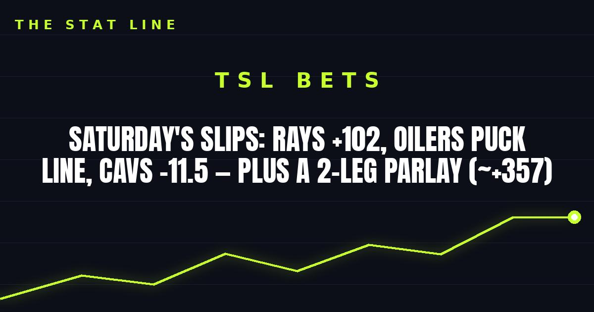

Saturday's Slips: Rays +102, Oilers Puck Line, Cavs -11.5 — Plus a 2-Leg Parlay (~+357)
World Series Game 2, a banged-up Leafs blue line in Edmonton, and an angry Cavs home opener. Three best bets plus a 2-leg parlay — and two games skipped on purpose.

Three games, three picks, one parlay. Skipped on purpose: Warriors at Suns (Steph Curry said he's "probably not" playing and Brandin Podziemski is out — fresh flags on the two guys who'd swing it) and Bucks at 76ers (LeBron James questionable with back management). No guessing on injury news — those two wait for another day.
GAME SLIP 1 — Tampa Bay Rays (98-64) at Milwaukee Brewers (103-59), World Series Game 2
First pitch: 8:00 PM ET, American Family Field — FOX. Brewers lead the series 1-0.
The lines: Brewers -122, Rays +102, total 6.5 (DraftKings, via NBC Sports)
Pitchers: Drew Rasmussen (Rays) vs. Logan Henderson (Brewers)
Injury report:
• Rays: Shane McClanahan is out for the postseason (forearm) — a known absence, already priced in
• Brewers: No new injury flag in the Game 2 reports
Storylines:
1. The Rays cannot afford 0-2. Lose tonight and they head home to Tropicana Field for Game 3 on Monday in a deep hole
2. Rasmussen is the Rays' best card: 14-1 in his last 15 starts, 11-0 with a 1.73 ERA since the All-Star break, and just 3 runs allowed in 21 postseason innings
3. Henderson is no pushover — the rookie went 11-3 with a 2.47 ERA in the regular season and was 6-0 with a 1.84 ERA at home — but this is a near coin-flip price on the better starter
PICK: Rays moneyline +102. Honest caveat: Milwaukee won 103 games and already took Game 1 in this building. This is a value play on the ace at plus money, not a lock.
GAME SLIP 2 — Toronto Maple Leafs (6-4-2) at Edmonton Oilers (8-1-1)
Puck drop: 7:00 PM ET, Rogers Place — ESPN+ / Sportsnet
The lines: Oilers -184, Leafs +152, total 6.5 (over -150), puck line Oilers -1.5 (+126) (FanDuel)
Goalies: Tristan Jarry (confirmed, Edmonton) vs. Anthony Stolarz (listed, Toronto)
Injury report:
• Leafs: John Tavares week-to-week (lower body, didn't travel), Chris Tanev week-to-week (upper body), Nick Blankenburg (upper body) and Marshall Rifai (lower body) also out — the blue line is gutted
• Oilers: Mattias Ekholm out 1-2 weeks, Devon Levi on injured reserve — but Jarry starts and the forward group is intact
Storylines:
1. Edmonton is 8-1-1, at home, with last change for McDavid and Draisaitl against Toronto's thinnest defensive pairings
2. Toronto just won its third straight — but the last one was a 5-4 squeaker over the Rangers, and the injuries have piled up since
3. The Oilers just survived a 6-5 shootout win over Carolina; they can win ugly, and they can win by two
PICK: Oilers puck line -1.5 (+126). Honest caveat: a one-goal Oilers win loses this bet outright, and Toronto can score with anyone. The margin is the whole bet.
GAME SLIP 3 — Brooklyn Nets (0-1) at Cleveland Cavaliers (0-1)
Tip: 7:30 PM ET, Rocket Arena — DAZN / NBA League Pass
The lines: Cavaliers -11.5, total 232.5 (spread via Sports Mole; total via StatSalt)
Injury report:
• Nets: Tyler Bilodeau out (shoulder sprain) — a rookie, not a rotation swing piece
• Cavaliers: Nae'Qwan Tomlin out (back), Khalifa Diop out (knee), Ernest Udeh Jr. out — all deep reserves; the core is intact
Storylines:
1. Cleveland blew a 29-point first-half lead in Philadelphia on Thursday — expect an angry team in its home opener
2. The Cavs have won seven straight meetings with Brooklyn dating back to November 2024
3. Brooklyn lost its opener at home to Charlotte — this is a team still finding itself, walking into a buzzsaw
PICK: Cavaliers -11.5. Honest caveat: laying double digits this early in the season is never comfortable, and Cleveland just proved it can go flat. If the Cavs come out sleepy again, this doesn't cover.
THE PARLAY — 2 legs, ~+357
• Rays moneyline (+102)
• Oilers puck line -1.5 (+126)
Two prices, both sourced above, no lottery ticket. The Rays need their ace to deal; the Oilers need to win by two against a depleted blue line. If either leg scares you, play them straight — that's the whole point of keeping it to two.
If you or someone you know has a gambling problem, call 1-800-GAMBLER.